Chapter 2 Random number generation
2.1 Pseudo random number generators
Definition 2.1 PRNG
A PRNG is an algorithm which outputs a sequence of numbers, which can be used as a replacement for an i.i.d. sequence of random numbers.
2.1.1 Structure of PRNG in computer
States: \(s_0\xrightarrow{f} s_1 \xrightarrow{f} s_2 \xrightarrow{f} s_3 \xrightarrow{f} \dots\)
Each state gives a random number : \[s_1\xrightarrow{g}X_1\\ s_2\xrightarrow{g}X_2\\ s_3\xrightarrow{g}X_3\\ \vdots\]
where \(s_i\in S.\) Here, \(S\) is called the state space, \(f:S\to S\) is called the mixing function and \(g:S\to \mathcal R\) is called the output function.
Note that \(s_0\) is never computed, \(s_0\) is called the seed.
Linear congruential generator (LCG)
\(mod \quad m\) means that we divide by m and take the remainder(對m取餘)
\(X_n=a(X_{n-1}+c)\quad mod \quad m,\) where \(X_n \in \{0,1,...,m-1\}, a\in \{1,2,...,m-1\}\), a is called the multiplier; \(c\in \{0,1,...,m-1\}\), c is called the increment; \(m\in \mathcal N=\{1,2,3,...\}\), m is called the modulus.
Under LCG, there’s no difference between X and s. That is, \(X_n\in\{0,1,...,m-1\}:=S,\quad g(s)=s, \quad f(X)=(aX+c)\quad mod\quad m\)
\(X_0\in S\) is the seed in LCG.
Example 2.1 LCG with \(m=8, a=5, c=1, X_0=0\)
\(X_1=(aX_0+c)\quad mod\quad m =(5\times 0+1)\quad mod\quad8=1\) \(X_2=(aX_1+c)\quad mod\quad m =(5\times 1+1)\quad mod\quad8=6\) \(X_3=(aX_2+c)\quad mod\quad m =(5\times 6+1)\quad mod\quad8=7\)
m <- 8
a <- 5
c <- 1
X0 <- 0
Xi <- X0
for (i in 1:10){
Xi <- (a*Xi + c)%%m
cat("X_", i, " = ", Xi, "\n", sep="")
}## X_1 = 1
## X_2 = 6
## X_3 = 7
## X_4 = 4
## X_5 = 5
## X_6 = 2
## X_7 = 3
## X_8 = 0
## X_9 = 1
## X_10 = 6rLCG <- function(n, m, a, c, X0){
Xi <- X0
for (i in 1:n){
Xi <- (a*Xi + c)%%m
cat("X_", i, " = ", Xi, "\n", sep="")
}
}
rLCG(5,8,5,1,0)## X_1 = 1
## X_2 = 6
## X_3 = 7
## X_4 = 4
## X_5 = 5rLCG <- function(n, m, a, c, X0){
result <- numeric(n)
Xi <- X0
for (i in 1:n){
Xi <- (a*Xi + c)%%m
result[i] <- Xi
}
return(result)
}
rLCG(5,8,5,1,0)## [1] 1 6 7 4 5rLCG(16,8,5,1,0)## [1] 1 6 7 4 5 2 3 0 1 6 7 4 5 2 3 0# Did you notice that it just repeat itself?
# This will be discuss later with the quality of PRNG
# also notice m=8, so it repeats itself every 8 numbersX <- rLCG(5,8,5,1,0)
plot(X)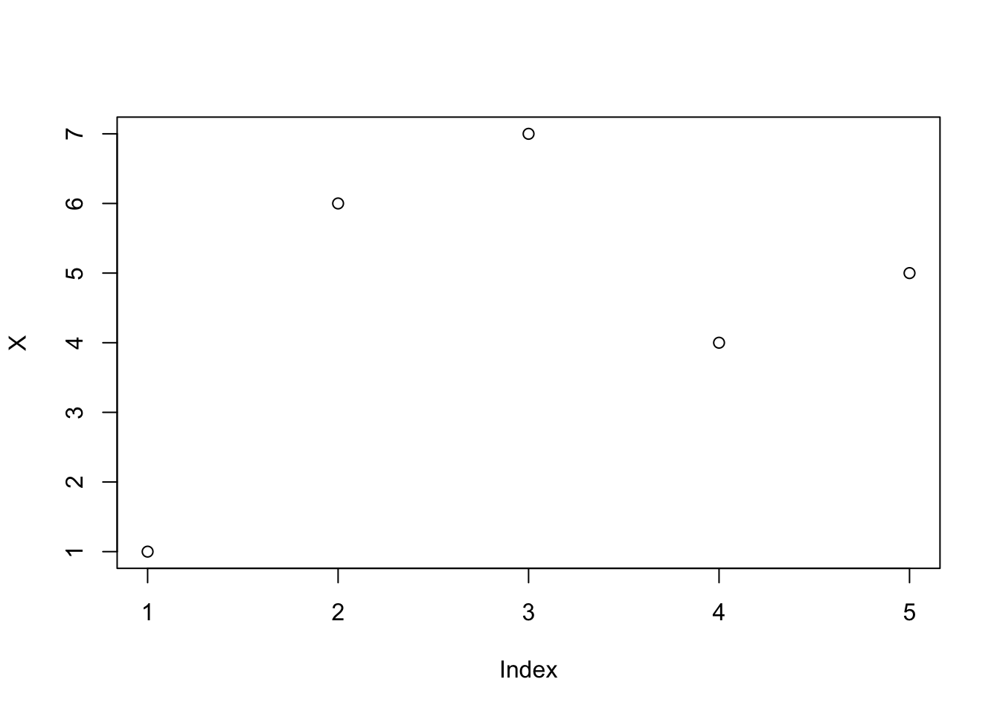
# the defult breaks on integer, which is not good
X <- rLCG(100000, 8,5,1,0)
hist(X) 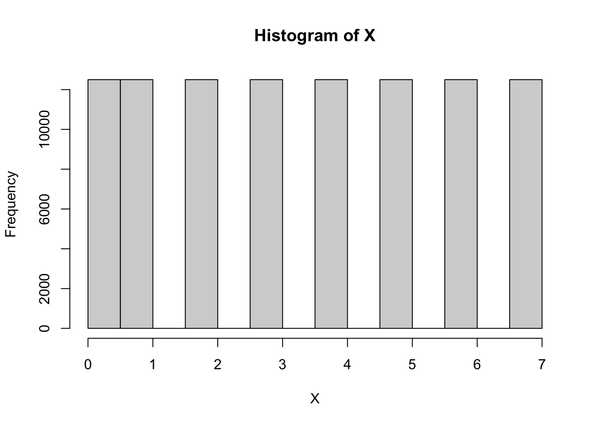
X <- rLCG(100000, 8,5,1,0)
hist(X, breaks = seq(-0.5, 7.5, 1)) 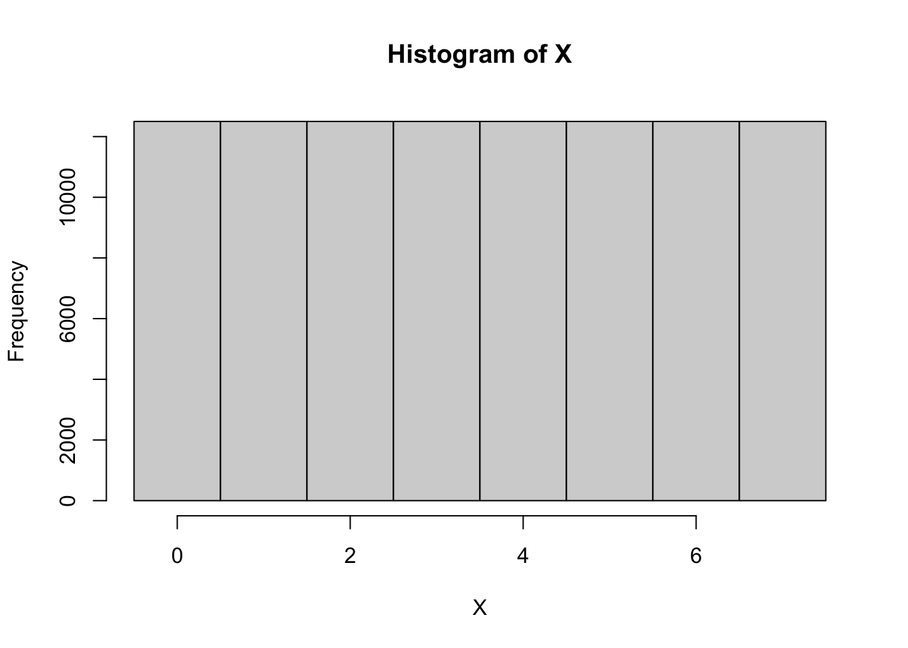
X <- rLCG(10, 8,5,1,0)
hist(X, breaks = seq(-0.5, 7.5, 1))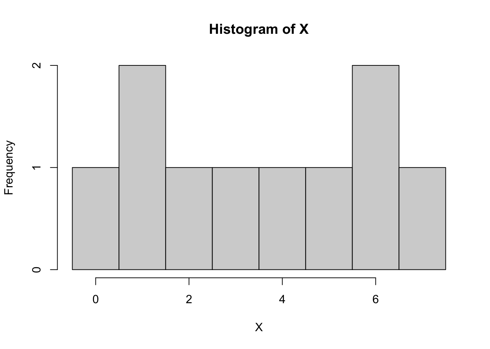
rLCG(10, m=2^31, a=1103515245, c=12345, X0=0)## [1] 12345 1406932606 654583808 1358247936 2138638336 1459132416
## [7] 1445521408 370866176 1896597568 1518859008LCG is outdated nowadays, the purpose of introducing this method is to give you a general understanding of how pseudo random numbers are produced in computer.
# the normal way to choose seed
?set.seedset.seed(0)
runif(3)## [1] 0.8966972 0.2655087 0.3721239set.seed(1)
runif(3)## [1] 0.2655087 0.3721239 0.57285342.1.2 Quality of PRNGs
There are a number of criteria.
- Period Length
The computer has only finite memory, so we can’t have infinite state space. It turns out that PRNG starts repeating itself after a while (entering the states that it has already visited).
The maximum period length is \(|S|\).
For LCG, \(S=\{0,1,...,m-1\} \implies |S|=m\)
Note that random numbers never repeat, but pseudo random numbers DO!! But fortunately, we can have extremely large period in R.
Good PRNG have large period.
- Distribution of samples
Aim: generate uniformly distributed samples.\(U(0,1)\)
For LCG, \(X_n \in \{0,1,...,m-1\}\), and we’ve seen from previous examples that LCG is indeed uniformly distributed from \(\{0,1,...,m-1\}\), note that this is not \(U(0,1)\) but at least it’s uniformly distributed.
To get \(U(0,1)\), use the transformation \(U_n:=\frac{X_n+1}{m+1}\in (0,1)\) for large m.
You can use histogram or check whether the PRNG visits each state exactly once (which then produces every pseudo number once) within its maximum period length.
Better criterion: PRNG output passes statistical tests for uniform distribution w/o problems (check example 1.6 in the book)
- Independence of samples
You can just plot \(X_n\) and \(X_{n-1}\) on x-axis and y-axis respectively.
X <- rLCG(1000,8,5,1,0)
# m=8 which means small state space, you won't expect this small m gives you uniformly distributed plot
plot(X[1:999], X[2:1000])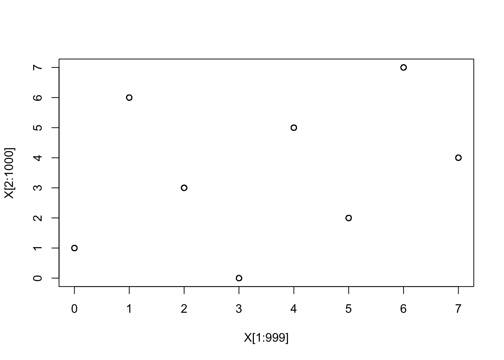
X <- rLCG(1000, m=2^32, a=1103515245, c=12345, X0=0)
plot(X[1:999], X[2:1000])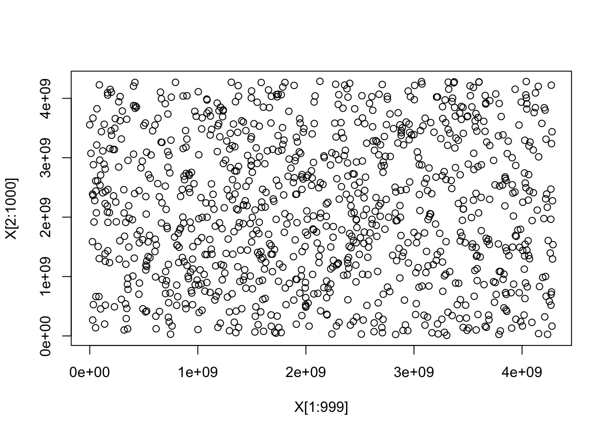
# well, it now looks like uniformly distributedU <- (X+1)/(2^32+1)
range(U)## [1] 2.874527e-06 9.979539e-01round(range(U),4)## [1] 0.000 0.998plot(U[1:999], U[2:1000], asp=1)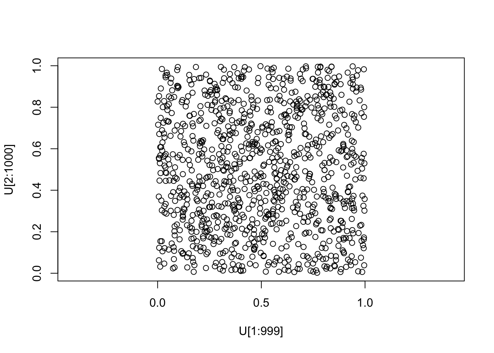
# Great, U(0,1)par(mai=c(0.9,0.9,0.1,0.1))
plot(U[1:999], U[2:1000], asp=1)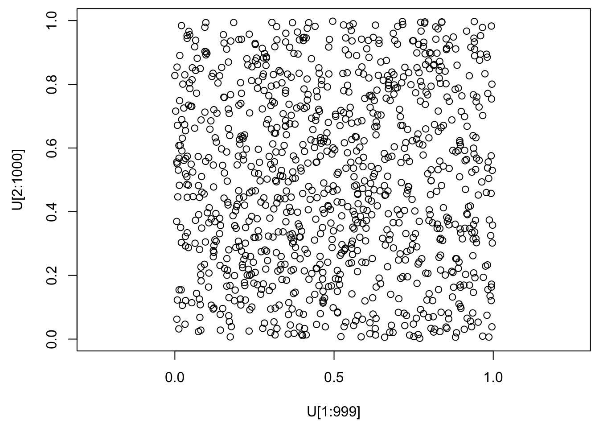
# Use R's default PRNG: Mersenne-Twister
X <- runif(1000)
plot(X[1:999], X[2:1000])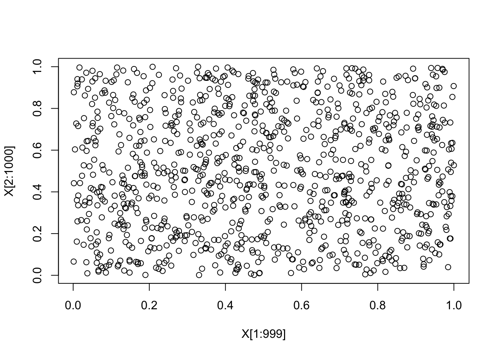
plot(X[1:999], X[2:1000], asp=1)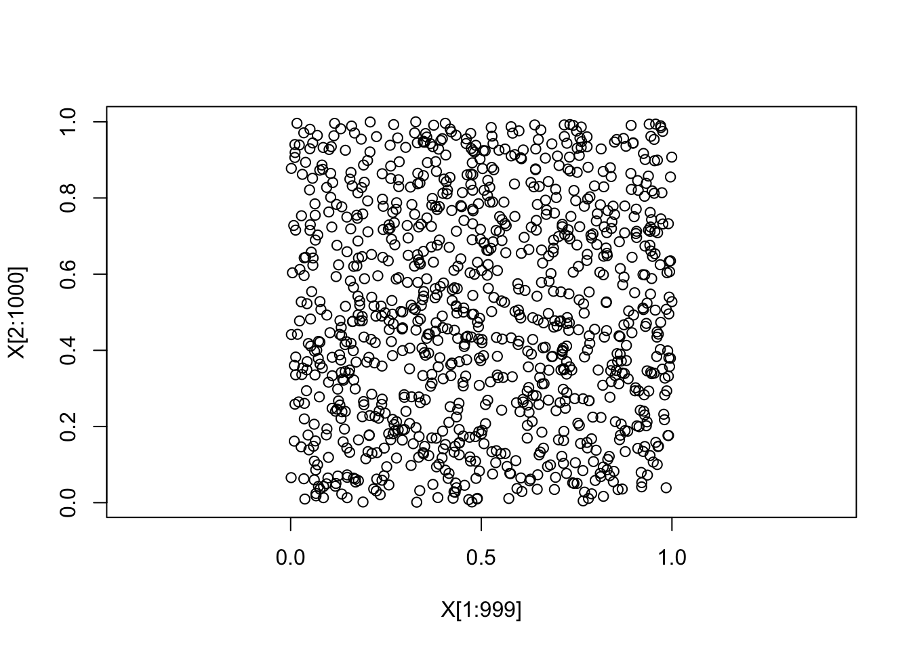
# You can see there's no discernible patternIn fact, the states are not independent, each state is completely determined by previous state via the function f, you can check the algorithm again. So the states are definitely not independent. But what about those outputs \(X_1,X_2,...\) produced by the function g? Well, then you need to choose g properly such that g will lose some information from the states and thus make those outputs \(X_1,X_2,...\) independent.
So theoretically, they are not independent unless you can choose g cleverly.
From our scatter plots above, they actually look quite good.
Definition 2.2 k-dimensionally equi-distributed
A sequence of numbers is said to be k-dimensionally equidistributed if every k-tuple of possible outputs occurs equally often in this sequence.
For example, consider LCG with k=2, we need to consider all pairs: (1,1), (1,2), (1,3),…
They are 2 dimensionally equi-distributed if the frequency of all possible pairs converge to the same number.
k-dimensionally equi-distributed is what we would expect for a sequence of independent random numbers.
Good PRNG has this property for large k.
- Role of the seed
Seed will determine which of the possible output sequences of PRNG we will get.
set.seed(1) # always get the same outputReproducible output(for reports or debugging)
For non-reproducible output: use techniques like current time of day as the seed.
2.2 The inverse transform method
Aim: Convert \(U\sim U(0,1)\) into X from a given distribution on \(\mathcal R\)
Definition 2.3 The cumulative distribution function (cdf) is given by \[F(a)=P(X \le a)\]
Moreover, \[P(X\in (a,b])=P(X \le b)-P(X\le a)=F(b)-F(a)\]
Proposition 2.1 \[U \sim U(0,1), X:=F^{-1}(u)\\ \implies X \text{ has cdf } F\]
Proof. \(F^{-1}(u):=inf\{x\in \mathcal R|F(x)\ge u \}\)
Let \(U\sim U(0,1), X=F^{-1}(u)\). Then
\[\begin{align} P(X \le a) &=P(F^{-1}(u)\le a)\\ &=P(inf\{x\in \mathcal R | F(x)\ge u\}\le a)\\ &=P(F(a)\ge u)\\ &=P(u\le F(a))\\ &=\frac{F(a)-0}{1-0}\\ &=F(a) \end{align}\]
We use the facts that \(inf\{x\in \mathcal R | F(x)\ge u\}\le a\iff F(a)\ge u\) and \(U\sim U(0,1)\)
Example 2.2 Consider \(X\sim Exp(\lambda)\)
\(f(x)=\begin{cases} \lambda e^{-\lambda x} & x\ge 0 \\ 0 & x<0 \end{cases}\)
\[\begin{align} \implies F(a)=P(X\le a)&=\int_{-\infty}^{a}f(x)dx=\int_{0}^{a}\lambda e^{-\lambda x}dx\\&=(-e^{-\lambda x})|_{x=0}^{a}=-e^{-\lambda a}-(-e^{-\lambda 0})=1-e^{-\lambda a} \end{align}\]
\(u=F(x)=1-e^{-\lambda x} \iff e^{-\lambda x}=1-u \iff -\lambda x=log(1-u)\iff x=-\frac{log(1-u)}{\lambda}\)
N <- 1e5
U <- runif(N)
lambda <- 2
X <- -log(1-U)/lambda
par(mai=c(0.9, 0.9, 0.1, 0.1))
hist(X, main=NULL, prob=TRUE, breaks=50)
x <- seq(0, max(X), length.out=100)
lines(x, dexp(x, lambda), col="red")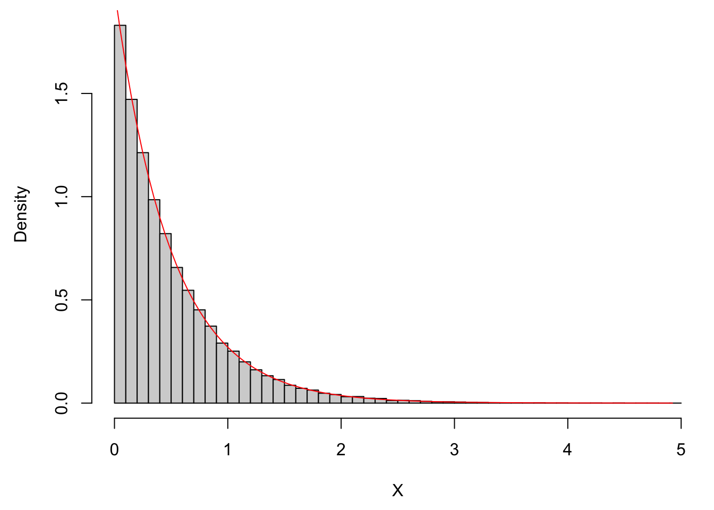
2.3 Rejection sampling
2.3.1 Basic Rejection Sampling
For n=1,2,3,…:
Generate \(X_n \sim g\) ( g is the proposal distribution)
Generate \(U_n\sim U(0,1)\)
\[\begin{cases}output\quad X_n (accept\quad X_n), & \text{if } U_n\le p=p(X_n)\\ ignore\quad X_n(reject \quad X_n), & o.w.\end{cases}\]
Note that \(P(U\le p)=p, \forall p\in[0,1]\), so \(P(U_n\le p=p(X_n))=p=p(X_n)\), i.e. we accept \(X_n\) with probability \(p=p(X_n)\). Here \(p(X_n)\) is to emphasize \(p\) depends on \(X_n\), \(p(X_n)\) is not the pdf of \(X_n\)
# first experiment about rejection sampling
N <- 10000
X <- numeric(N)
i <- 1
while (i<=N){
Xi <- rnorm(1)
X[i] <- Xi
i <- i+1
}
par(mai=c(0.9, 0.9, 0.1, 0.1))
hist(X, main=NULL, prob=TRUE, breaks = 50)
x <- seq(-4, 4, length.out=200)
lines(x, dnorm(x), col="red", lwd=2)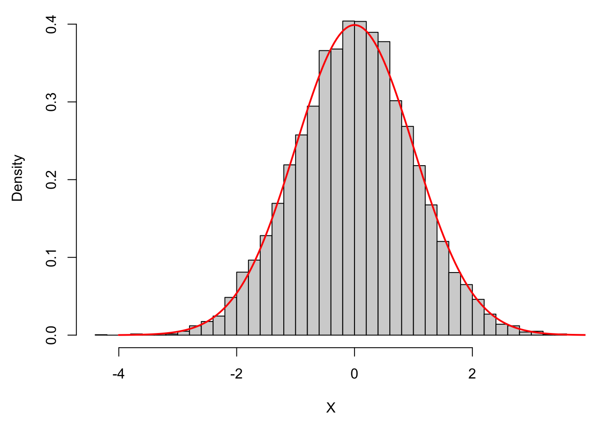
N <- 10000
X <- numeric(N)
i <- 1
while (i<=N){
Xi <- rnorm(1)
U <- runif(1)
p <- ifelse(Xi<0, 0.5, 1) # scale down the negative part
if(U<=p){
X[i] <- Xi
i <- i+1
}
}
par(mai=c(0.9, 0.9, 0.1, 0.1))
hist(X, main=NULL, prob=TRUE, breaks = 50)
x <- seq(-4, 4, length.out=200)
lines(x, dnorm(x), col="red", lwd=2)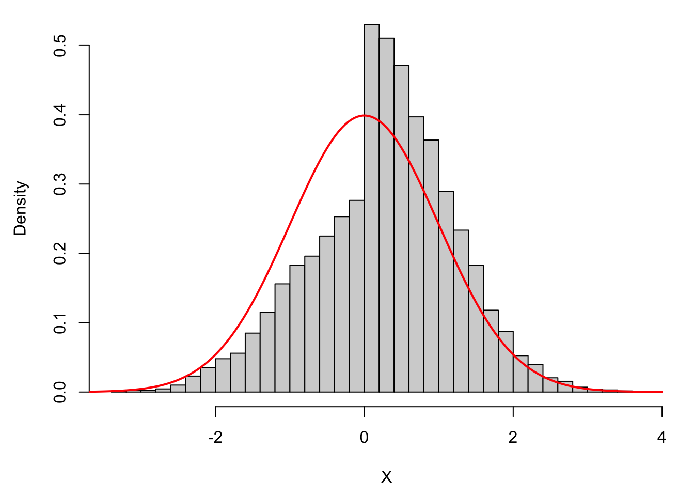
Let \(\phi(x)=\frac{1}{\sqrt{2\pi}}e^{-\frac{x^2}{2}}\) be the std. normal pdf.
In the above codes, p <- ifelse(Xi<0, 0.5, 1) scale down the negative part by 1/2, i.e. the area under the histogram is now 1/4 (negative part) + 1/2 (positive part) = 3/4, which is no longer 1.
p <- ifelse(Xi<0, 0.5, 1), you can think of this as \(p(x)\phi(x)=\begin{cases} 1\phi(x), & \text{if positive part}\\ \frac{1}{2}\phi(x), & \text{if negative part} \end{cases}\)
But now, \(p(x)\phi(x)\) is not a probability distribution, because the area under \(p(x)\phi(x)\) is 3/4. To make this be a probability distribution again, we will divide 3/4, i.e. \(\frac{1}{3/4}p(x)\phi(x)=\frac{1}{z}p(x)g(x)\), where \(z=3/4, g(x)=\phi(x)\)
N <- 10000
X <- numeric(N)
i <- 1
count <- 0
while (i<=N){
Xi <- rnorm(1)
count <- count+1
U <- runif(1)
p <- ifelse(Xi<0, 0.5, 1) # scale down the negative part
if(U<=p){
X[i] <- Xi
i <- i+1
}
}
# The number of required proposals we have
# to get N accepted samples
cat("count =", count, "\n")## count = 13278par(mai=c(0.9, 0.9, 0.1, 0.1))
hist(X, main=NULL, prob=TRUE, breaks = 50)
x <- seq(-4, 4, length.out=200)
lines(x, ifelse(x<0, 0.5, 1) * dnorm(x) * 4/3, col="red", lwd=2)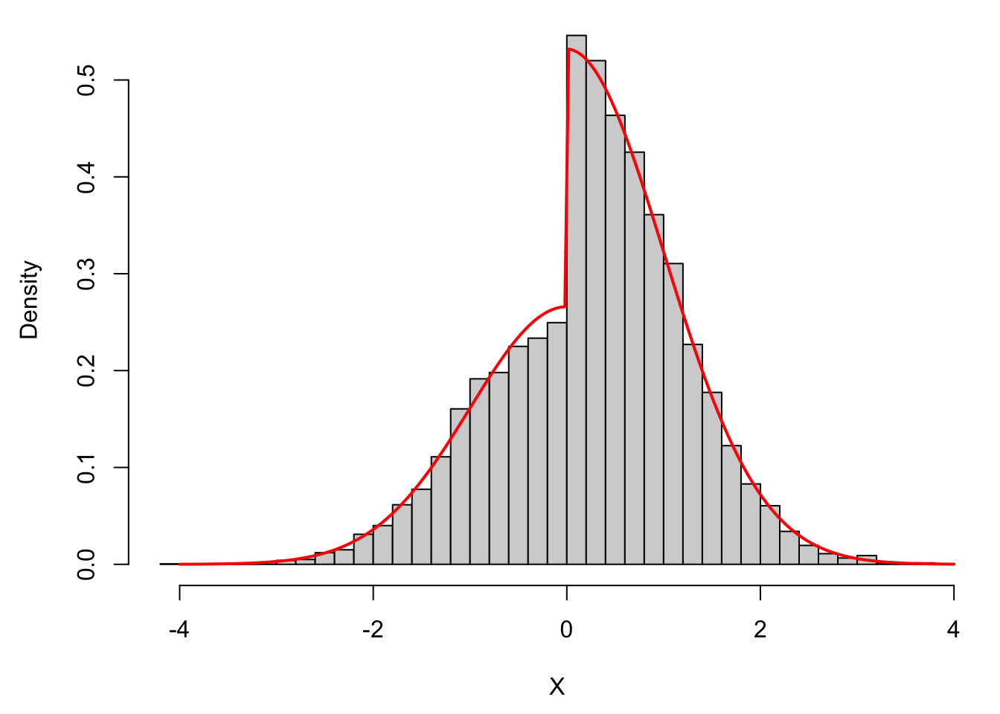
Proposition 2.2 Given proposals \(X_n\sim g\), acceptance probability \(p(x)\in [0,1]\)
Let \(N_k=\) index of the kth accepted proposal
(For example, \(X_1, X_2, X_3, X_4, ...\), say \(X_3\) is rejected, then \(X_{N_1}=X_1, X_{N_2}=X_2, X_{N_3}=X_4,...\))
Then
the accepted samples have density \[f(x)=\frac{1}{z}p(x)g(x)\], i.e. \((X_{N_k})\) is an i.i.d. sequence with density f.
Each sample is accepted with probability \(z\). The number of required proposals is geometrically distributed with mean \(\frac{1}{z}\).
Note that \(1=\int_{\mathcal R} \frac{1}{z}p(x)g(x)dx=\frac{1}{z}\int_{\mathcal R} p(x)g(x)dx\\ \implies z=\int p(x)g(x)dx\)
Proof. The probability of accepting \(X_n\) is
\[\begin{align} P(X_n accepted)&=P(U_n\le p(X_n))\\ &=\int_{\mathcal R}\int_{0}^{1}\boldsymbol 1_{\{U\le p(X)\}} du\quad g(x) dx\\ &=\int_{\mathcal R}p(x)g(x)dx=z \end{align}\]
Note that \(p(x)=\int_{0}^{1}\boldsymbol 1_{\{U\le p(X)\}} du\) and \(\boldsymbol 1_{\{U\le p(X)\}}=\begin{cases}1, & \text{if } U_n\le p(X_n)\\ 0, & o.w. \end{cases}\)
Now, we want to show \(P(X_{N_k}\in A)=\int_{A}f(x)dx\)
\[\begin{align*} &P(X_{N_k}\in A|N_{k-1}=n) \\ &=\sum_{m=1}^{\infty}P(X_{N_k}\in A, N_k=n+m|N_{k-1}=n) \\ &=\sum_{m=1}^{\infty}P(X_{N_{n+m}}\in A, N_k=n+m|N_{k-1}=n) \\ &=\sum_{m=1}^{\infty}P(X_{n+m}\in A, U_{n+1}>p(X_{n+1}),..., U_{n+m-1}>p(X_{n+m-1}), U_{n+m}\le p(X_{n+m})|N_{k-1}=n)\\ &=\sum_{m=1}^{\infty}P(U_{n+1}>p(X_{n+1}),..., U_{n+m-1}>p(X_{n+m-1}), U_{n+m}\le p(X_{n+m}), X_{n+m}\in A|N_{k-1}=n)\\ &=\sum_{m=1}^{\infty}P(U_{n+1}>p(X_{n+1})|N_{k-1}=n)\times \dots \\ &\quad\times P(U_{n+m-1}>p(X_{n+m-1})|N_{k-1}=n)P(X_{n+m}\in A, U_{n+m}\le p(X_{n+m})|N_{k-1}=n) \end{align*}\]
The last equation come about b/c of independence.
Now, observe:
\(P(U_{n+1}>p(X_{n+1})|N_{k-1}=n)=1-z\)
\(\vdots\)
\(P(U_{n+m-1}>p(X_{n+m-1})|N_{k-1}=n)=1-z\)
\(P(U_{n+m}\le p(X_{n+m}), X_{n+m}\in A|N_{k-1}=n)\\=\int_{\mathcal R}\int_{1}^{0}\boldsymbol 1_{\{U\le p(X), X\in A\}} du\quad g(x)dx\\=\int_{\mathcal R}\int_{1}^{0}\boldsymbol 1_{\{U\le p(X)\}}\boldsymbol 1_{\{ X\in A\}} du\quad g(x)dx\\=\int_{\mathcal R}\int_{1}^{0}\boldsymbol 1_{\{U\le p(X)\}}du\quad \boldsymbol 1_{\{ X\in A\}}g(x)dx\\=\int_{\mathcal R}p(x)\boldsymbol 1_{\{ X\in A\}}g(x)dx\\=\int_{A}p(x)g(x)dx\\\)
(One thing to notice: \(\boldsymbol 1_{\{U\le p(X), X\in A\}}=\boldsymbol 1_{\{U\le p(X)\}}\boldsymbol 1_{\{ X\in A\}}\), This is because these two conditions must hold at the same time to get 1)
Hence, \[\begin{align*} P(X_{N_k}\in A|N_{k-1}=n)&=\sum_{m=1}^{\infty}P(X_{N_k}\in A, N_k=n+m|N_{k-1}=n)\\ &=\sum_{m=1}^{\infty}P(U_{n+1}>p(X_{n+1})|N_{k-1}=n)\times \dots \times\\ &P(U_{n+m-1}>p(X_{n+m-1})|N_{k-1}=n)P(X_{n+m}\in A, U_{n+m}\le p(X_{n+m})|N_{k-1}=n)\\ &= (\sum_{m=1}^{\infty}(1-z)^{m-1})\int_{A}p(x)g(x)dx\\ &=(\sum_{m=0}^{\infty}(1-z)^{m})\int_{A}p(x)g(x)dx\\ &=\frac{1}{1-(1-z)}\int_{A}p(x)g(x)dx\\ &=\int_{A}\frac{1}{z}p(x)g(x)dx\\ &=\int_{A}f(x)dx \end{align*}\] , which is true independent of n
Hence \(P(X_{N_k}\in A)=\int_{A}f(x)dx\), i.e. \(X_{N_k}\) has desity f.
Recall the fact that \(\sum_{m=0}^{\infty}a^m=\frac{1}{1-a},\forall |a|<1\)
Example 2.3 Consider \(X_n\sim U(-1,+1)\implies g(x)=\boldsymbol 1_{[-1,+1]}\times \frac{1}{2}\), and \(p(x)=\sqrt{1-x^2}\), which is the upper half of the unit circle.
Then \(f(x)=\frac{1}{z}p(x)g(x)=\frac{1}{z}\times \begin{cases} \sqrt{1-x^2}\times \frac{1}{2}, & \forall x\in [-1,+1]\\ 0, & \forall x \notin[-1,+1] \end{cases}\)
So, \(z=\int_{-1}^{+1}p(x)g(x)dx=\int_{-1}^{+1}\sqrt{1-x^2}\times 1/2dx=1/2\int_{-1}^{+1}\sqrt{1-x^2}dx\\=1/2\times \frac{1}{2}\pi1^2\\=\pi/4\)
This implies the accepted samples have density \[f(x)=\begin{cases}2/\pi\sqrt{1-x^2} & \forall x\in [-1,+1]\\0 & o.w. \end{cases}\]
In fact, this distribution f(x) is the so-called Wigner semicircle distribution.
N <- 10000
X <- numeric(N)
i <- 1
count <- 0
while (i<=N){
Xi <- runif(1,-1,1)
count <- count+1
U <- runif(1)
p <- sqrt(1-Xi^2)
if(U<=p){
X[i] <- Xi
i <- i+1
}
}
# The number of required proposals we have
# to get N accepted samples
cat("count =", count, "\n")## count = 12732par(mai=c(0.9, 0.9, 0.1, 0.1))
hist(X, main=NULL, prob=TRUE,asp=1)
x <- seq(-1, 1, length.out= 100)
f.of.x <- 4/pi * sqrt(1-x^2) * 1/2
lines(x, f.of.x, col="red", lwd=2)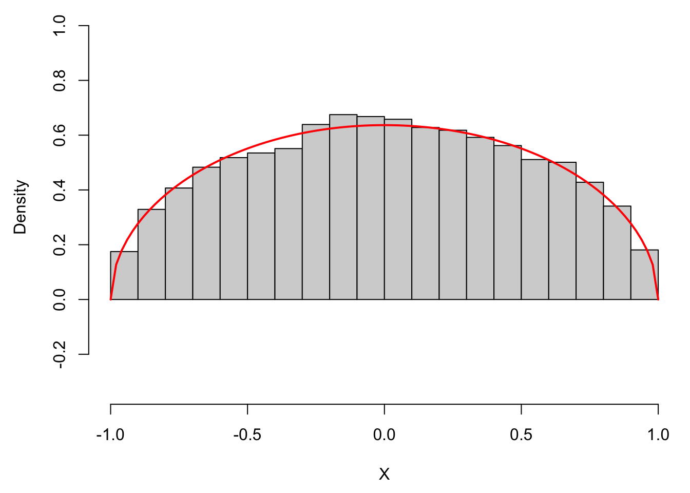
z=pi/4
# The number of required proposals is geometrically distributed
# with mean 1/z
1/z## [1] 1.273242.3.2 Envelope Rejection Sampling
Recall: In previous sections, we generate \(X\sim g\) and \(U\sim U(0,1)\). We accept X, if \(U\le p(X)\).
Also, accepted sample have density \(f(x)=\frac{1}{z}p(x)g(x)\). Note that this implies \(p(x)=constant\times\frac{f(x)}{g(x)}.\)
But \(p(x)\) is a probability, so we must have \(\frac{f(x)}{g(x)}\) to be bounded, i.e. \(f(x)\le c\times g(x),\forall x\) for some constant c, so that we can adjust the constant term in \(p(x)=constant\times\frac{f(x)}{g(x)}\) such that \(p(x)\in [0,1].\) It turns out this constant term is \(\frac{1}{c}\), i.e. \(p(x)=\frac{1}{c}\frac{f(x)}{g(x)}\)
In this section, instead of finding what \(f\) is, \(f\) is already GIVEN, envelope rejection sampling can do this.
\(f(x)\le c\times g(x),\forall x\), is why we call it envelope rejection sampling.
We will only require f to known up to a multiplicative constant (e.g. instead of knowing \(f(x)=\frac{1}{\sqrt{2\pi}}e^{-x^2/2}\), we only need to know \(f(x)=e^{-x^2/2}\)), and we assume \(f(x)\ge 0\) (don’t need to integrate to 1.), to get samples from \[\tilde f(x)=\frac{1}{z_f}f(x), z_f=\int_{\mathcal R}f(x)dx\]
Proposition 2.3 Input: \(f: \mathcal R \to [0,\infty)\) with \(z_f=\int f(x)dx<\infty\), \(g: \mathcal R \to [0,\infty)\) be a probability density, and a constant c such that \(f(x)\le cg(x)\)
Generate \(X\sim g\) and \(U\sim U(0,1)\). We accept X, if \(cg(x)\times U\le f(x)\) (you can write \(U\le \frac{f(x)}{cg(x)}\), but make sure that the denominator ≠ 0)
Then we have:
Accepted samples have density \(\tilde f(x)=\frac{1}{z_f}f(x)\)
Each proposal is accepted with probability \(\frac{z_f}{c}\), and mean number of proposals per output is \(\frac{c}{z_f}\)
Proof. Each proposal is accepted with probability \(p(x)=\begin{cases} \frac{f(x)}{cg(x)} & \text{ if } g(x)>0 \\ 1 & \text{ if } g(x)=0 \end{cases}.\) Note that when \(g(x)=0\), \(cg(x)\times U=0\le f(x)\) always holds b/c we also assume \(f(x)>0\), so we must accept X when \(g(x)=0\)
By basic rejection sampling, the accepted samples have density \(\frac{1}{z}p(x)g(x)=\begin{cases} \frac{1}{z}\frac{f(x)}{cg(x)}g(x)=f(x)/zc & \text{ if } g(x)>0\\ \frac{1}{z}\times 1\times g(x)=0 & \text{ if }g(x)=0\end{cases}\)
In fact, from the above we get \(\frac{1}{z}p(x)g(x)=\frac{f(x)}{zc}\) no matter whether \(g(x)=0\). This is b/c \(f(x)\le c\times g(x),\forall x\) so \(g(x)=0\implies f(x)=0\)
\(z=\int p(x)g(x)dx=\frac{1}{c}\int f(x)dx=\frac{z_f}{c}\\ \implies\frac{1}{z}p(x)g(x)=\frac{c}{z_f}\frac{f(x)}{c}=\frac{1}{z_f}f(x)=\tilde f(x)\)
Each sample is accepted with probability \(z=z_f/c\)
Example 2.4 Consider \(f(x)=e^{-x^2/2}\), we want to find some constant c and proposal \(g(x)\) so that \(f(x)\le cg(x)\)
Since \(f(x)\) is pretty similar to std. Normal, one can consider \(g(x)\) to be double exponential distribution.
For proposals: \(X\sim \frac{\lambda}{2}e^{-\lambda|x|}=:g(x)\)
(Let’s digress a little bit, how can we use inverse transform sampling to generate random samples from double exponential distribution?
Steps:
Generate \(U\sim U(0,1)\),
Generate \(Y=-\frac{log(1-U)}{\lambda}\)
(note that this is from exponential distribution, so it only has positive side of double exponential),
Generate \(V\sim U(0,1)\)
(double exponential is symmetric to 0),
and let \(X=\begin{cases}Y, & V\le1/2 \\-Y, & V>1/2 \end{cases}\)
)
Now, can we find c with \(f(x)\le cg(x), \forall x\in \mathcal R\), or equivalently, \(f(x)/g(x)\le c, \forall x\in \mathcal R\)?
(The equivalence holds b/c g(x) is never 0 in this example)
\(\frac{f(x)}{g(x)}=\frac{e^{-x^2/2}}{\frac{\lambda}{2}e^{-\lambda |x|}}=\frac{2}{\lambda}e^{-\frac{x^2}{2}+\lambda |x|}\)
Note that double exponential distribution is symmetric to 0, so we can simply consider the positive part (\(x\ge 0\)), so now we have \(\frac{f(x)}{g(x)}=\frac{2}{\lambda}e^{-\frac{x^2}{2}+\lambda |x|}=\frac{2}{\lambda}e^{-\frac{x^2}{2}+\lambda x}\)
Also note that by F.O.C, we have \(0=(-\frac{x^2}{2}+\lambda x)'=-x+\lambda \iff x=\lambda\), i.e. \(-\frac{x^2}{2}+\lambda x\) has max at \(x=\lambda\)
This gives \(\frac{f(x)}{g(x)}=\frac{2}{\lambda}e^{-\frac{x^2}{2}+\lambda |x|}=\frac{2}{\lambda}e^{-\frac{x^2}{2}+\lambda x}\le \frac{2}{\lambda}e^{-\frac{\lambda^2}{2}+\lambda^2}=\frac{2}{\lambda}e^{\frac{\lambda^2}{2}}=:c\)
So yes, we found c with \(f(x)/g(x)\le c, \forall x\in \mathcal R\)
Now, following the steps in envelope rejection sampling, we then:
Generate \(W\sim U(0,1)\), and accept X if \(cg(x)\times W\le f(x) \\ \implies \frac{2}{\lambda}e^{\frac{\lambda^2}{2}}\frac{\lambda}{2}e^{-\lambda|x|}W\le e^{-x^2/2}\\ \implies W\le exp(-\frac{x^2}{2}+\lambda |x|-\frac{\lambda^2}{2})\)
# converting double-exponential to normal distribution
# using rejection sampling
lambda <- 1
#non-normalized target distribution
f <- function(x) exp(-x^2/2)
# proposal density
g <- function(x) lambda/2 * exp(-lambda*abs(x))
# const c for envelope sampling
c <- 2/lambda * exp(lambda^2/2)
x <- seq(-3,3,length.out=200)
plot(x, c*g(x), type="l", col="blue")
lines(x, f(x))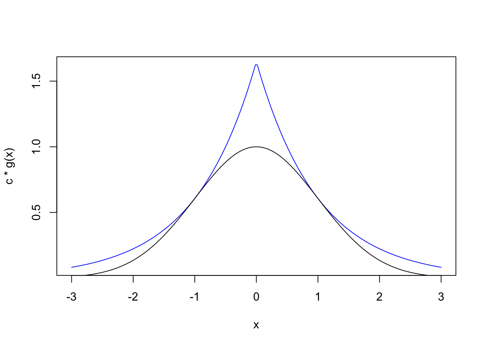
N <- 1e5
U <- runif(N)
Y <- -log(1-U)/lambda
V <- runif(N)
X <- ifelse(V<=1/2, Y, -Y)
par(mai=c(0.9,0.9,0.2,0.1))
hist(X, prob=TRUE, breaks=50, main=NULL)
x <- seq(-10,10, length.out=200)
lines(x, g(x), col="red", lwd=2)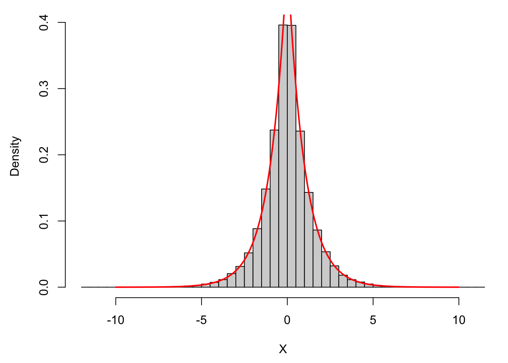
N <- 1e5
V <- rexp(N, lambda)
X <- ifelse(V<=1/2, Y, -Y)
par(mai=c(0.9,0.9,0.2,0.1))
hist(X, prob=TRUE, breaks=50, main=NULL)
x <- seq(-10,10, length.out=200)
lines(x, g(x), col="red", lwd=2)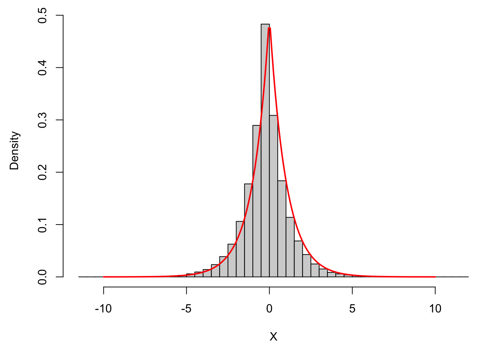
N <- 1e5
X <- numeric(N)
i <- 1
count <- 0
while (i<=N){
U <- runif(1)
Y <- -log(1-U)/ lambda
V <- runif(1)
Xi <- ifelse(V<=1/2, Y, -Y)
count <- count+1
W <- runif(1)
if(c*g(Xi)*W <= f(Xi)){
X[i] <- Xi
i <- i+1
}
}
cat("count =", count, "\n")## count = 131439par(mai=c(0.9,0.9,0.2,0.1))
hist(X, prob=TRUE, breaks=50, main=NULL)
x <- seq(-4,4, length.out=200)
lines(x, dnorm(x), col="red", lwd=2)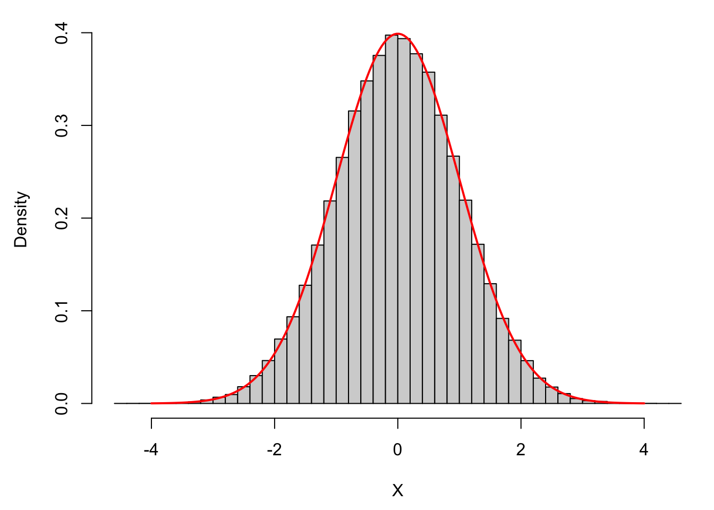
2.3.3 Choice of g
We must be able to efficiently generate samples from g
We must have \(f(x)\le cg(x), \forall x\). In particular, g must have heavier tails than f, i.e. we cannot have \[\lim_{|x|\to \infty}\frac{g(x)}{f(x)}=0\], i.e. \(g(x)\to 0\) faster than \(f(x)\to 0\)
Example 2.5
\(f(x)\sim e^{-x^2/2}, g\sim e^{-\lambda|x|}\), note that \(e^{-x^2/2}\) decays faster than \(e^{-\lambda|x|}\) as \(|x|\to \infty\) so this example works fine.
\(f(x)\sim \frac{1}{x^\beta}\) (for large x), \(g\sim e^{-\lambda x}\), note that \(\frac{1}{x^\beta}\) decays slower \(\implies\) cannot find c, so this example doesn’t work.